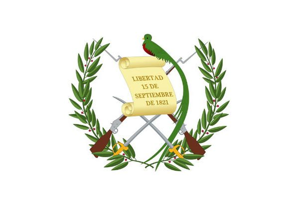
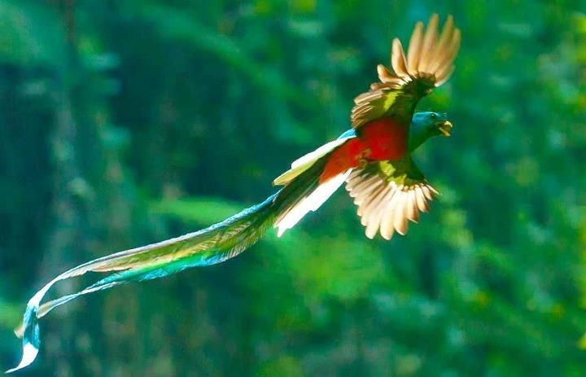
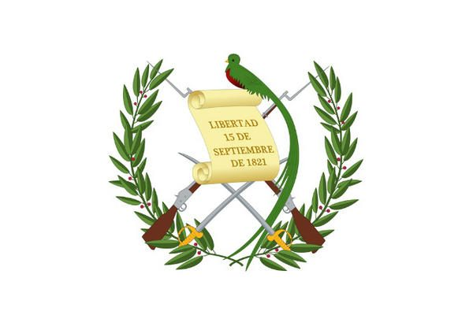
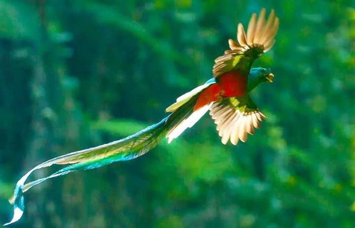

Las tierras bajas del Petén, en el norte del país, fueron el hogar de la civilización maya clásica, cuyo apogeo se situó entre los siglos VII y IX d.c. Los Mayas fueron el origen de la difusión del arte, la arquitectura, la cerámica y la escritura guatemaltecos, y el sitio de Tikal abriga aún las ruinas de 3000 estructuras, entre ellos, templos piramidales, plazas y numerosos monumentos. Entre 1250 y 1520 fueron organizados los primeros estados (Quiché, Cakchiquel), cuyas guerras perpetuas debieron facilitar la colonización española. Fue el lugarteniente de Hernán Cortés, Pedro de Alvarado, quien conquistó el país, en 1524. Santiago de Guatemala, la primera capital, fue fundada en 1527. En 1542, el país formó la capitanería general de Guatemala, bajo la dependencia del virrey de México. El país proclamó su independencia el 15 de septiembre de 1821, para ser inmediatamente integrado al imperio mexicano de Iturbide. Recuperó su autonomía en 1823 y luego formó parte de las Provincias Unidas de América Central, constituidas por las actuales Guatemala, Honduras, Salvador, Nicaragua y Costa Rica. La federación se dislocó en 1839 después de una revuelta dirigida por el guatemalteco Rafael Carrera, proclamado presidente vitalicio en 1854. A fines del siglo XIX, bajo la presidencia de Justo Rufino Barrios (1873-1885), el país entró en una fase de expansión económica (desarrollo del cultivo de café y las infraestructuras) que se acompañó de una apertura a los intereses extranjeros, proseguida bajo la presidencia de Manuel Estrada Cabrera (1898-1920). Fue en esta época que la empresa norteamericana United Fruit Company constituyó, en la costa del Pacífico, un verdadero imperio bananero que fue la primera potencia económica del país. Su extencion territorial es de 108.888 km²
 




Ciudad de Guatemala, Guatemala